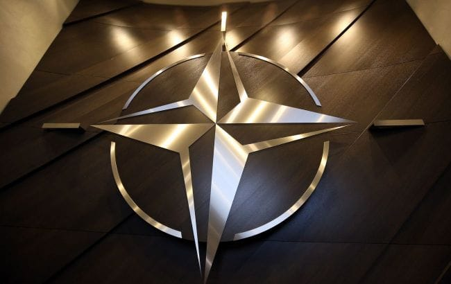

世界苦茶07月19日新闻 | 30条 | 习近平罕见批评各地盲目投资新兴产业

习近平罕见批评各地盲目投资新兴产业 | 美日继续贸易谈判 | 美国与多国不支持以色列攻击叙利亚 | 特朗普否定爱珀斯坦案 | 巴西突袭前总统博索纳罗住址
今日三条新闻分析
苦茶数据
美元兑人民币：7.18（昨日7.18，前日7.18）
美元兑日元：148.49（昨日148.72，前日148.59）
上证指数：休市（昨日3534，前日3435）
标普500指数：休市（昨日6296，前日6297）
比特币：118296（昨日120330，前日118435）
布伦特原油：69.28（昨日70.12，前日68.78）
中国新闻
• 教育部发布赴菲留学预警 ：中国教育部指菲律宾针对中国公民的犯罪多发，提醒计划赴菲留学人员做好安全评估，增强防范意识。中国教育部星期五在官网发布留学预警，称菲律宾近期治安不靖，针对中国公民犯罪多发，提醒留学人员近期选择赴菲学习时，评估好安全风险。中国外交部发言人林剑同日在例行记者会上答记者问时进一步说，菲社会对中国公民的犯罪和盘查滋扰近来多发，政府发布有关预警是本着负责任态度、为保障中国留学生安全和权益所采取的合理举措。他说，中国敦促菲律宾采取切实措施，保障中国赴菲留学人员的安全、尊严和权益。
• 中日关系现回暖与对峙并存 ：中日关系近来出现解冻迹象，在日本参议院改选前夕，中国传出宣布恢复自2023年以来暂停的449种日本水产品进口，展现对日经贸释放善意。不过，一名日商日籍员工遭北京法院以间谍罪判处三年半徒刑，加上中国强烈抗议日本新版防卫白皮书，显示双方在军事与安全议题上的紧张未见缓解。美国特朗普政府关税战压境之下，中国近期积极改善对日关系，特别是营造经济领域的和谐氛围。日本共同社星期四引述日中消息人士报道，中国政府已批准从日本进口金枪鱼、扇贝和螃蟹等449种水产品。这是自2023年8月以来，北京重启进口日本水产品。据报道，中国海关总署上星期五批准北海道和青森县的三家日本企业为输华水产品进行注册登记，之后再发布准入水产品清单，显示重启进口日本水产手续取得进展。
• 武汉美领馆因高温暂停面签 ：美国驻武汉总领事馆以室内温度不安全为由，暂停所有签证面谈预约。美国驻武汉总领事馆星期五在微信公众号发布公告，指“由于我们大楼内不安全的温度，美国驻武汉总领事馆起暂停签证面谈预约”。公告指总领馆所在大楼的物业“经常性延迟开启大楼空调，导致我馆面签等待区上午的室温高达33摄氏度”。大楼物业还设置额外的安保程序，导致申请人需在无遮阳设施的户外长时间等待。
• 人民日报谈中美合唱引猜测 ：中国官媒《人民日报》星期五发文，借中美青少年合唱周活动评论两国关系，并提及抗日战争胜利80周年，称“中美并肩抗击法西斯”，引发外界猜测此举或为美国总统特朗普访华参加阅兵仪式铺路。《人民日报》署名“钟声”的文章《歌唱和平，共同书写中美友好的新故事》指出，2025年“鼓岭缘”中美青少年合唱周活动是习近平2023年在旧金山提出“未来5年愿邀请5万名美国青少年来华交流学习”倡议实施以来，规模最大的主题性中美青少年交流活动。倡议提出以来，有力推动两国青少年交流蓬勃开展。文章称，近年来中美关系遭遇不少困难和挑战，但两国人民双向奔赴的脚步从未停歇。越是困难时刻，越需要拉紧民心纽带。中美双方应排除干扰，为两国人民多走动、多来往、多交流提供便利，为中美关系行稳致远夯实基础，积聚更多理性和正能量。
• 习近平批地方盲目投新兴产业 ：中国国家主席习近平批评地方政府扎堆投资人工智能、新能源汽车等新兴产业的做法，显示中央高层对国内产能过剩、通缩风险及对外经贸摩擦的忧虑日益加深。《人民日报》星期四头版报道中提到，习近平本周在主持召开城市工作会议时指出：“上项目，一说就是几样：人工智能、算力、新能源汽车，是不是全国各省份都要往这些方向去发展产业？”路透社指出，中国官媒直接引用最高领导人口语化的提问，较为罕见。
• 山东倡公务员带头消费 ：山东省旅促会7月18日发《关于公职人员支持旅游餐饮业，带头消费拉动经济发展的倡议书》指公务员身为“收入相对稳定的社会群体”，应在合规前提下主动作为，践行担当，带头消费，文明消费。该会7月17日开“新消费形势下饭店餐饮企业座谈会”，发现山东高端公务消费断崖式下跌，倒逼营收结构重组；人均消费下降，非节假日出现客流缺口，众多餐饮企业走上街头摆摊自救，甚至关门歇业人员轮休。
• 中国市场监管总局约谈三家外卖平台企业： 今天，中国市场监管总局约谈了饿了么、美团、京东三家平台企业，要求相关平台企业严格遵守《中华人民共和国电子商务法》《中华人民共和国反不正当竞争法》《中华人民共和国食品安全法》等法律法规规定，严格落实主体责任，进一步规范促销行为，理性参与竞争，共同构建消费者、商家、外卖骑手和平台企业等多方共赢的良好生态，促进餐饮服务行业规范健康持续发展。此前，对于近期外卖行业补贴大战一事，京东表示此次外卖“0元购”等外卖恶性补贴是严重内卷的表现，属于恶性竞争，京东完全没有参与。
亚太印太新闻
• 赖清德蒋万安就团结交锋 ：台湾台北市长蒋万安与总统赖清德围绕团结议题正面交锋。蒋万安呼吁赖清德“枪口不要对内”，赖清德则反击团结不是口号，必须建立在“反共、反并吞、护主权”的共同信念上。综合台湾《联合报》和ETtoday新闻云报道，蒋万安与赖清德星期五共同出席北部城镇韧性演习。两人现场握手寒暄，但互动不多，场面略显尴尬。蒋万安在致辞中阐述他的“团结”论述，提出从中央到地方、从政府到民间，只要为共同目标努力，就是团结。他说：“真正的团结，才能打造韧性、守护家园。”
• 台湾立法虐杀童者最高死刑 ：台湾立法院星期五三读通过刑法修正条款，虐杀七岁以下孩童者将面对最重的死刑惩罚。综合台湾《联合报》和ETtoday新闻云报道，台北保母虐童致死案引发社会哗然，台湾立法院重新检讨相关刑责问题，在星期五三读通过国民党和民众党并案的刑法修正条款。经修正后，加重了对未满七岁孩童犯下杀人罪与伤害罪的刑责。未来对未满七岁之人，以凌虐方式犯杀人罪者，处死刑或无期徒刑；对于未满七岁之人，以凌虐因而致人于死者，处死刑、无期徒刑或10年以上有期徒刑。
• 泰国打击“丧尸烟弹”滥用药 ：泰国正在加强对依托咪酯的限制，以遏制这种麻醉剂被用于制造成为“丧尸烟弹”的危险电子烟产品。《曼谷邮报》星期四报道，目前依托咪酯在泰国被列为特别管制物质，仅限医生在医疗机构中用于特定手术或治疗程序。不过，泰国食品和药物管理局副秘书长威提说，在最近的几起案件中，发现这种麻醉剂被非法混入电子烟液体，以寻求引发精神反应。
• 日本将与欧盟举行安全峰会 ：日本下周将与欧盟举行峰会，欧盟委员会主席冯德莱恩预计也将出席。法新社报道，日本外交部星期五说，日本首相石破茂将于下星期三在东京会见冯德莱恩及欧洲理事会主席科斯塔。三方将就国家安全、经济等议题展开讨论。
• 韩国改革领养制度防虐童 ：韩国将于星期六彻底改革领养制度，结束长期以来将领养业务外包给私人机构的做法，这个做法此前曾引发广泛的虐待指控。法新社报道，韩国曾于1955年至1999年间，把超过14万名儿童送往海外收养。但今年一项官方调查得出结论称，国际领养过程存在大量违规行为，包括伪造孤儿身份、身份窜改以及对领养父母审查不充分。
• 韩国暴雨致多人死伤数千疏散 ：韩国连续第三天遭暴雨肆虐，至今有超过5000人被迫疏散，洪水已造成四人死亡、一人失踪。韩联社报道，韩国中央灾难安全对策本部星期五引述消防厅等方面报告发布的消息，截至星期五清晨6时，光州市有一人失踪，忠清南道瑞山市两人、唐津市一人和京畿道乌山市一人因暴雨意外死亡。全国有5192人疏散避险，共328处道路被淹，496处公共设施和276处私人设施受灾。韩国气象厅预警，未来几天仍将有强降雨，部分地区至星期天前后恐再迎来超过30公分的降雨量。中央灾难安全对策本部已将危机警报上调至最高级的“严重”，呼吁全国民众严加戒备，全力防范次生灾害扩散。
• 朝鲜宣布暂不接待外国游客 ：朝鲜国家旅游总局运营的网站“朝鲜观光”星期五发布公告说，元山葛麻海岸旅游区于7月1日对外开放，但“暂不接待外国游客”。韩联社报道，朝方未说明改变方针的具体原因。朝鲜此前多次宣传元山葛麻旅游区。7月11日至13日，俄罗斯外长拉夫罗夫携俄罗斯记者团访问元山，并拜会朝鲜领导人金正恩，参观当地旅游设施。相关消息被众多外媒报道，等于间接为元山进行宣传。在此情况下，朝鲜却突然宣布暂时不接待外国游客。
科技新闻
• 特朗普签首部稳定币法案 ：美国总统特朗普签署首个监管稳定币的联邦法案成法，为美国数码资产行业取得一大胜利。彭博社报道，特朗普星期五在白宫的签署仪式上，称这项《天才法案》为“巩固美国在全球金融和加密技术领域的主导地位迈出一大步”。他说：“《天才法案》创建了一个清晰简单的监管框架，以确立并释放美元支持的稳定币的巨大潜力。这或许是互联网诞生以来金融技术领域最伟大的革命。”
• 达美航拟用AI定制票价 ：根据《财富》杂志在达美航空最新财报电话会议中发现的评论，达美航空正倾向于采用动态机票定价，利用人工智能来单独确定乘客愿意支付的最高航班费用。在去年对该技术进行有限测试后，达美航空在看到“令人惊喜的有利”结果后，计划完全放弃静态机票价格。达美航空总裁格伦·豪恩斯坦去年11月向投资者表示：“我们将针对您个人，制定在特定时间、特定航班上的机票价格。”该公司已开始在1%的机票价格上测试该技术。根据上周的财报电话会议，达美航空目前使用人工智能来影响3%的机票价格，并且计划在今年年底前将这一比例提高到 20%。
• 苹果起诉爆料人泄露iOS26 ：苹果公司本周将一名知名科技爆料人告上法庭。根据北加州法院公布的诉状，被苹果送上法庭的是科技博主乔恩·普罗瑟，全网粉丝数量超百万。其中在 YouTube 上的粉丝数达到55.8万。苹果在起诉状中表示，普罗瑟指示本案另一名被告迈克尔·拉马乔蒂，利用其与苹果工程师伊桑·利普尼克的友情，秘密窃取iOS 26的设计信息。掌握利普尼克iPhone密码的拉马乔蒂，利用 “位置追踪” 功能确认其长时间离家后，访问了运行开发版 iOS 操作系统的手机，并通过视频通话向普罗瑟展示了iOS 26。普罗瑟录制了视频并分享给他人，用来制作爆料用的渲染图。苹果要求法院禁止其再次泄露商业机密并寻求赔偿。
财经新闻
• 美日有望继续推进贸易协议 ：美国财长贝森特在东京举行会谈后说，美日之间仍有可能达成贸易协议。综合共同社和法新社报道，日本首相石破茂星期五与访问日本的贝森特举行了约半小时会谈，就美国关税措施“为了达成符合双方利益的共识，继续大力开展磋商”。贝森特在社媒平台上说：“比起匆忙达成共识来，达成良好的共识更加重要，而美国和日本之间依旧可能达成互利的贸易协议。”
• 稀土出口回升显示供应回暖 ：中国稀土产品出口在5月跌至五年来新低后，6月大幅回升，环比增长80%，显示在经历出口管控后，磁材供应有回暖迹象。中国海关总署星期五公布的数据显示，6月中国稀土产品出口达3808吨，远高于5月的2115吨。据彭博社报道，在稀土产品这一类别中，磁材通常占比最大，且正是近期贸易摩擦的焦点之一。不过，相关具体出口数据最早要到星期天才会公布。
• 中国批准449种日本水产进口 ：日本媒体报道，中国政府批准449种日本水产品进口。日本共同社星期四引述日中消息人士报道，中国政府已批准从日本进口金枪鱼、扇贝和螃蟹等449种水产品。这是自2023年8月以来，北京重启进口日本水产品。消息人士透露，中国海关总署星期二在官网公布上述进口清单。
• 商务部称中国消费力超美 ：中国商务部披露，中国的社会零售实际购买力已超过美国，是美国的1.6倍。据新华社报道，中国商务部长王文涛星期五在新闻发布会上说，2021年至2024年，从绝对值来看，中国的社会零售总额绝对值已相当于美国的80%左右；从实际购买力来看，中国社会零售总额已超过美国，是美国的1.6倍。谈及消费政策时，王文涛说，自去年9月至今，限上单位家电类商品零售额连续保持两位数增长；2024年新能源车保有量较2020年增长5.4倍，今年上半年渗透率达到50.2%。
• 富国银行暂停员工赴华 ：知情人士透露，在美籍华裔高管被拒离境后，美国富国银行将暂停所有员工赴华。路透社星期四引述知情人士报道上述消息。《华尔街日报》当天引述知情人士报道，富国银行华裔高管毛晨月近日入境中国后，被拒离境。富国银行发言人在发给路透社的电邮声明中说，“我们正密切追踪这个情况，并通过适当渠道进行协调，以确保我们的员工能尽快返回美国。”
俄乌战争
• 泽连斯基敦促加快和谈进程 ：乌克兰总统泽连斯基星期五说，乌克兰与俄罗斯的和平谈判“需要更多动力”，并已要求新任国家安全与国防委员会秘书乌梅罗夫“加快谈判进程”。路透社报道，俄乌两国今年在土耳其举行了两轮和谈，但成效不尽理想，仅达成了交换战俘和士兵遗体的协议。目前尚未确定何时举行新一轮谈判。泽连斯基在社媒平台上写道：“正在落实第二次在伊斯坦布尔谈判中达成的协议……这一进程需要更多动力。”
• 欧英再推对俄能源新制裁 ：欧盟和英国7月18日对俄罗斯能源部门、‘影子舰队’等实施新的制裁。欧盟下调原有的俄罗斯原油出口价格上限60美元至47.6美元，实施进口禁令避免俄罗斯通过非欧盟国家间接出口石油，制裁俄罗斯石油公司在印度的炼油厂。欧盟还制裁了俄罗斯银行业，旨在限制俄罗斯筹资或进行金融交易，两家中国银行在名单之上。英国除制裁俄罗斯石油产业外，还对俄罗斯情报总局部分机构以及18名情报人员实施制裁，他们策划了对马里乌波尔剧院的袭击，并将目标对准一名后来被神经毒剂杀死的前俄罗斯间谍的家人。欧盟外交与安全政策高级代表卡拉斯表示，制裁表明欧洲不会在对乌克兰的支持上退缩，欧盟将继续施压直至俄罗斯结束战争。乌克兰总统泽连斯基对制裁表示欢迎。克里姆林宫发言人佩斯科夫表示单方面限制非法。
• 北约指挥官称美欧必须为与中俄战争做准备： 据《图片报》报道，北约驻欧洲新任总司令阿莱克斯·格林克维奇将军表示，欧洲与美国必须积极为未来与中国和俄罗斯的战争做好准备，因为一旦中国领导人习近平决定攻打台湾，他将推动俄罗斯攻击北约国家。格林克维奇认为，美国和欧盟最多只有两年半的时间来准备与中俄的战争。他预测2027年将是一个重大危机之年。根据他的说法，习近平在筹划攻打台湾的同时，会试图转移美国和北约对印太地区的注意力，其中一种可能的方式就是俄罗斯对北约国家发起攻击。
国际新闻
• 美不支持以色列袭击叙利亚 ：美国表明不支持以色列近期对叙利亚的袭击，而叙利亚临时总统沙拉指责以色列试图分裂他的国家，并承诺保护叙利亚少数族群德鲁兹人。路透社报道，美国国务院发言人布鲁斯星期四说：“美国不支持以色列近期的袭击。我们正与以叙进行最高级别的外交接触，以解决当前危机并促使两国达成一项持久的协议。”布鲁斯拒绝说明华盛顿是否支持以色列在它认为必要时开展这类军事行动，并强调“已非常明确地向以色列表达我们的不满”。
• 11国声明支持叙主权统一 ：11个中东国家发表联合声明，支持叙利亚安全、统一、稳定和主权，反对外国干涉叙利亚事务。新华社报道，约旦外交部星期四发表声明说，约旦、阿拉伯联合酋长国、巴林、土耳其、沙特阿拉伯、伊拉克、阿曼、卡塔尔、科威特、黎巴嫩、埃及等国外长过去两天里就叙利亚局势密集磋商，统一立场。各国外长一致强调，支持叙利亚安全、统一、稳定和主权，反对任何外国干涉叙利亚事务；欢迎就结束叙苏韦达省危机达成的协议，强调必须执行协议以保护叙利亚的统一和公民安全；支持在苏韦达省及整个叙利亚建立安全、国家主权和法治的努力，反对暴力、宗派主义、挑起不和与煽动仇恨。
• 土耳其突袭逮捕153名IS嫌犯 ：土耳其在全国各地展开突袭行动，逮捕了153名被指是“伊斯兰国”成员的可疑分子。法新社报道，土耳其内政部长耶尔利卡亚星期五说，当局从西部的伊兹密尔和西南部的穆拉，到东南部的哈塔伊和马尔丁，以及北部黑海沿岸的萨姆松等地逮捕了这些人。耶尔利卡亚在社媒平台上说：“过去两周在28个省展开的行动中，我们的宪兵部队逮捕了153名疑似恐怖组织‘伊斯兰国’的成员。”
• 特朗普否认涉爱泼斯坦案 ：美国总统特朗普再次否认他与爱泼斯坦案有关联，称美国《华尔街日报》的“特朗普致爱泼斯坦信件”报道为“假新闻”，信函是伪造，他将起诉这家“令人作呕的肮脏小报”。《华尔街日报》星期四报道，“富商淫媒”爱泼斯坦50岁生日时收到的贺信中，有一封带有特朗普签名，信上画有一个裸体女子的素描。《华尔街日报》审阅了这封信，但没有刊登信中图像。
• 巴西警方突袭博尔索纳罗住宅并令其佩戴电子脚环，担忧其潜逃风险： 巴西警方于周五清晨突袭了前总统雅伊尔·博尔索纳罗的住宅和政治总部，对其住所进行了搜查，并下令其佩戴电子脚环。作为美国前总统特朗普的盟友，这位极右翼政治人物也被巴西最高法院下令禁止与外国官员接触、不得靠近大使馆，同时被封禁社交媒体。上述限制措施是出于对博尔索纳罗可能潜逃的担忧，目前他正因涉嫌策划推翻2022年总统选举结果而接受审判——该次选举中他败给了现任总统路易斯·伊纳西奥·卢拉·达席尔瓦。博尔索纳罗否认有任何不当行为。周五在警察局外接受采访时，博尔索纳罗称佩戴脚环是“一种最高级的羞辱”，并表示他“从未想过离开巴西”。